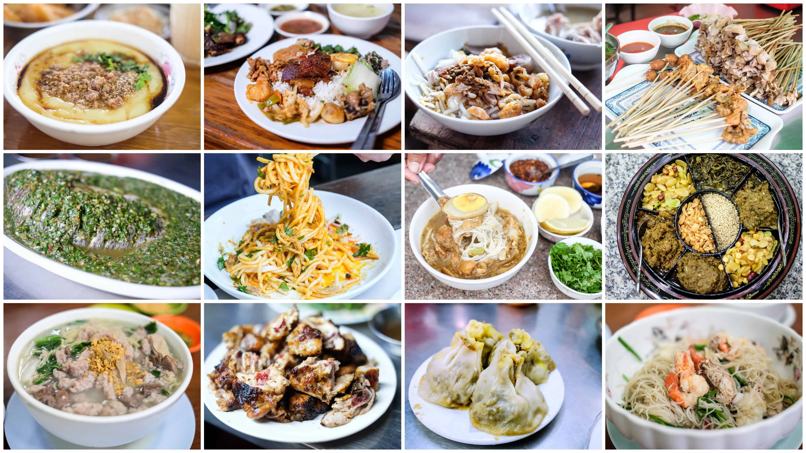
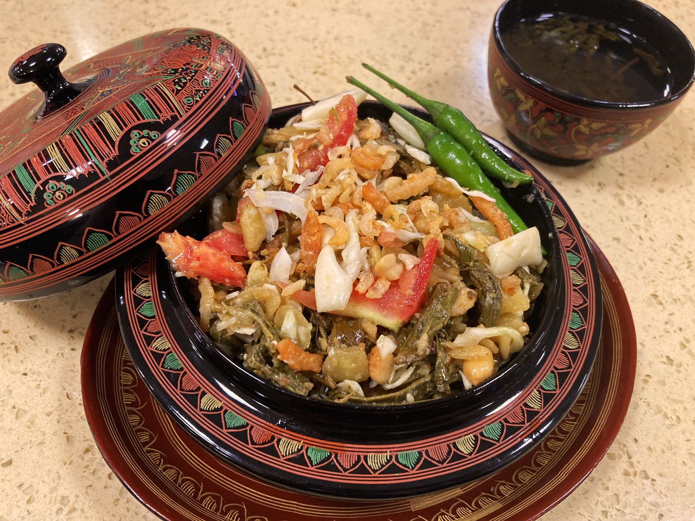
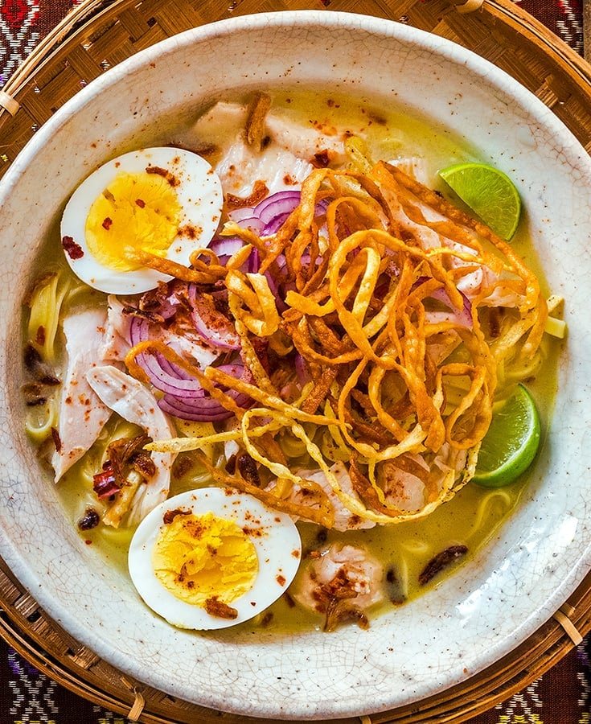
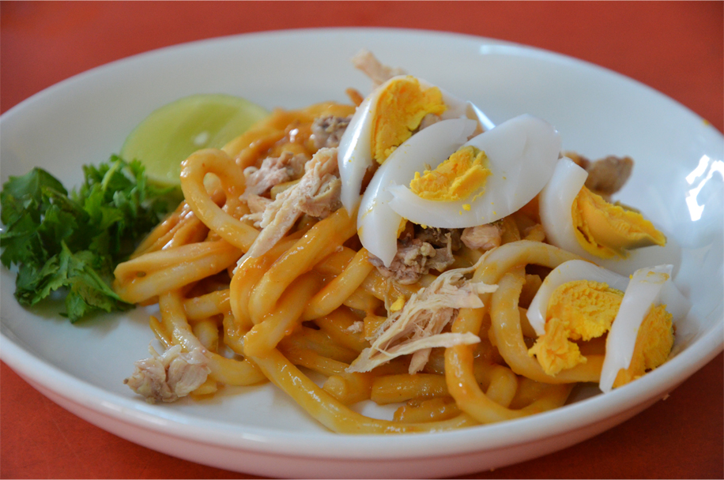

モヒンガは米麺で作る魚のスープで、通常はボリュームのある朝食として食べられます。レモングラス、 ターメリック、魚醤で味付けした濃厚なスープが特徴で、ゆで卵、コリアンダー、クリスピーなフリッターが添えられることが多いです。 モヒンガは国内のほとんどの地域で簡単に手に入り、大都市の露店や道端の屋台で売られています。モヒンガは伝統的に朝食として食べられていますが、 今日では一日中いつでも食べられています。
モヒンガを調理するために必要な材料と調理方法については以下で説明します。
必要な材料
| グラム粉 | 砕いたトーストした米 |
| ニンニク | エシャロット |
| 玉ねぎ | レモングラス |
| ショウガ | 魚のすり身 |
| 魚醤 | ナマズ |

ラット・ファットはビルマ語で発酵茶または漬け茶を意味します。ミャンマーは、お茶が飲料としてだけでなく、 この地域特有の漬け茶の形で食用珍味としても消費されている数少ない国の 1 つです。ラペットは、ビルマ社会で重要な役割を果たしている 国民的珍味とみなされており、伝統的なビルマのおもてなしのしぐさとして、自宅を訪れた客に振る舞われています。ミャンマー料理におけるラペットの位置付けは、 次のよく知られた表現に反映されています。「果物の中ではマンゴーが最高、肉の中では豚肉が最高、そして葉の中ではラペットが最高」。
ラット・ファット・トークを調理するために必要な材料と調理方法については以下で説明します。
必要な材料
| 柔らかい漬け茶葉 | カリカリに焼いたピーナッツ |
| カリカリの豆 | 煎ったゴマ |
| 揚げたニンニク | 干しエビ |
| 刻んだトマト | 油 |

ココナッツノードルは、ひよこ豆の粉でとろみをつけたチキンカレーとココナッツミルクのスープに小麦麺を入れたビルマ料理です。 チキンカレーとココナッツミルクのスープにひよこ豆の粉でとろみをつけた濃厚なスープに小麦麺を入れた料理です。 クリスピーに揚げた豆のフリッター、固ゆで卵、スライスした生の玉ねぎ、唐辛子、クリスピーな麺が添えられています。 魚醤とライムまたはレモン汁が全体にかけられます。特に屋台や家庭では、高血圧に関する健康上の懸念に対処するため、ココナッツミルクの代わりにエバミルクを使用するバージョンもあります。 シュエタウンカオスエと呼ばれる別のバリエーションでは、乾燥麺をココナッツミルクで調理したチキンカレーと混ぜることで、伝統的な味にひねりを加えています。
ココナッツノードルを調理するために必要な材料と調理方法については以下で説明します。
必要な材料
| ココナッツミルク | ライスヌードル |
| すりおろした生姜 1cm | 魚醤 |
| エシャロット | みじん切りにしたニンニク 大さじ1杯 |
| ライムジュース | タイのレッドカレーペースト |
| ターメリックパウダー | コーシャーソルト |
| 大きな赤唐辛子 | オリーブオイル |
| 醤油 | 油 大さじ1杯 |
| ブラウンシュガー | チキンストック |
| コリアンダー | ノードル |
| 生姜 | レモングラス |
| ココナッツミルク | ネギ（細かく刻む） |

ナン ジー トケはビルマ料理のアトックサラダ料理で、特製のチキンカレーとチリオイルを混ぜた太い丸い米麺で作られています。 この料理には、トーストしたひよこ豆の粉、スライスした玉ねぎ、唐辛子、クリスピー麺、ゆで卵のスライス、魚のすり身が添えられ、 ライムまたはレモンの皮が添えられています。ヌードルサラダはマンダレーの屋台料理として生まれました。
ナン ジー トケを調理するために必要な材料と調理方法については以下で説明します。
必要な材料
| 太いライスヌードル | チキンまたはポークカレー |
| トーストしたひよこ豆の粉 | スライスした玉ねぎ |
| 唐辛子 | リスピーノードル |
| ゆで卵のスライス | ライムジュース |
ビルマミルクティーはミャンマー（ビルマ）発祥のお茶飲料で、伝統的には濃いめの紅茶とミルク（通常はエバミルクとコンデンスミルク）で作られます。 ビルマのミルクティーは、ビルマのフリッターやモンと呼ばれるお菓子などの一口サイズの軽食に添えて、ティーショップでよく飲まれています。 ビルマのミルクティーは伝統的に注文を受けてから作られ、個人の好みに基づいてお茶とミルクの比率がカスタマイズされます。
ビルマミルクティーを調理するために必要な材料と調理方法については以下で説明します。
必要な材料
| 砂糖 | 乳製品不使用クリーマー |
| グルコースシロップ | 水素添加植物油 |
| カゼインナトリウム（乳由来） | 認可乳化剤 |
| 流動化剤 | 可溶性茶粉末 |
Copyright ©2024スミャパイ (24CA0117).All rights reserved. 24ca0117@jec.ac.jp TEL:08044000252